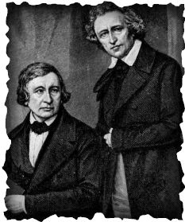

On 15 May 1825 Wilhelm married Henriette Dorothea (Dortchen) Wild, a pharmacist's daughter and childhood friend who had given the brothers several tales. Jacob never married but continued to live in the household with Wilhelm and Dortchen. In 1830 both brothers were overlooked when the post of chief librarian came available, which disappointed them greatly. They moved the household to Göttingen in the Kingdom of Hanover, where they took employment at the University of Göttingen—Jacob as a professor and head librarian and Wilhelm as a professor.
During the next seven years the brothers continued to research, write, and publish. In 1835 Jacob published the well-regarded German Mythology (Deutsche Mythologie); Wilhelm continued to edit and prepare the third edition of Kinder- und Hausmärchen for publication. The two brothers taught German studies at the university, becoming well-respected in the newly established discipline.
In 1837 the brothers lost their university posts after joining the rest of the Göttingen Seven in protest. The 1830s were a period of political upheaval and peasant revolt in Germany, leading to the movement for democratic reform known as Young Germany. The brothers were not directly aligned with the Young Germans, but they and five of their colleagues reacted against the demands of Ernest Augustus, King of Hanover, who in 1837 dissolved the parliament of Hanover and demanded oaths of allegiance from civil servants—including professors at the University of Göttingen.